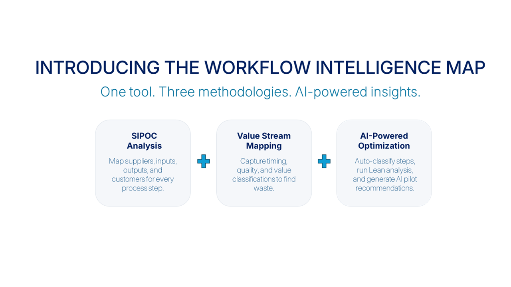

01
AI layered on top of broken workflows
Without workflow clarity, AI amplifies inconsistency and rework.
We help teams deliver faster and smarter with practical, systems-first, tool-agnostic AI-enabled workflows that actually stick.
Without workflow clarity, AI amplifies inconsistency and rework.
If inputs and decision rights are not explicit, delivery slows. AI cannot fix that.
Tooling helps document the drift. Systems thinking prevents it.
WIM combines three proven methodologies — workflow mapping, SIPOC, and AI capability classification — into a single guided experience.
Every session ends with a ranked pilot plan tied to real constraints — not a list of possibilities. — The WIM promise
